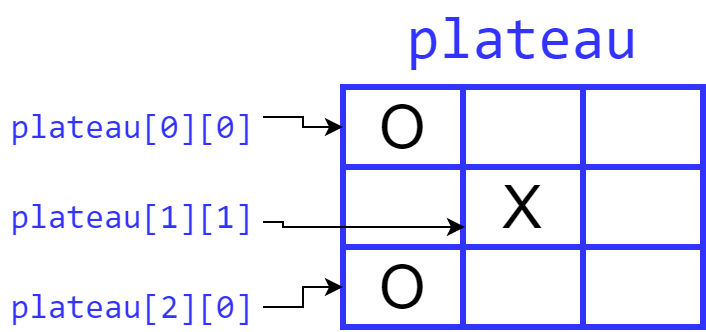
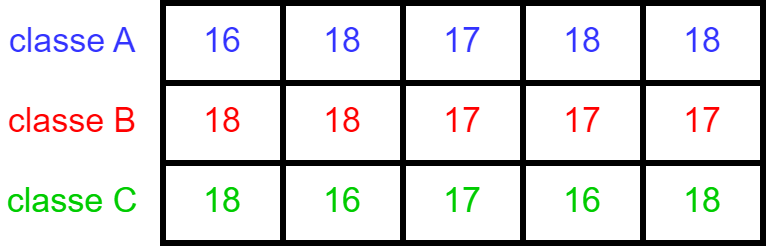
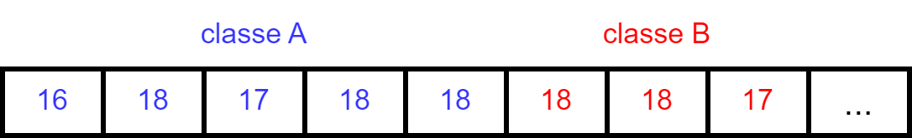

class: center, middle # Programmation procédurale : # les tableaux bidimensionnels <img height="200px" src="img/logo.png"> --- ## On parle de quoi ? 1. <a href="UAA11-ch8.html#3">Qu'est-ce qu'un tableau bidimensionnel ?</a> 2. <a href="UAA11-ch8.html#4">Déclaration</a> 3. <a href="UAA11-ch8.html#6">Stockage en mémoire</a> 4. <a href="UAA11-ch8.html#7">Initialisation</a> 5. <a href="UAA11-ch8.html#8">Tableaux 2D et fonctions</a> 6. <a href="UAA11-ch8.html#10">Exercices</a> --- ## Qu'est-ce qu'un tableau bidimensionnel ? Un **tableau bidimensionnel** (ou tableau 2D) est un tableau composé de lignes et de colonnes. Exemple avec le jeu OXO :  --- ## Déclaration La déclaration d'un tableau 2D comprend : * le type des éléments * le nom du tableau * le nombre maximum de lignes * le nombre maximum de colonnes Exemple : on souhaite calculer l'age moyen des élèves **par classe**.  --- ## Déclaration On définit le tableau 2D de la manière suivante : ```c #define NB_MAX_CLASSES 3 #define NB_MAX_ELEVES 5 void main(void){ int ages[NB_MAX_CLASSES][NB_MAX_ELEVES]; } ``` --- ## Stockage en mémoire Les tableaux 2D sont stockés linéairement. Dans l'exemple précédant, les ages sont donc stockés sous cette forme :  → <span style="color:red">Lors de l'initialisation, il est obligatoire de **préciser le nombre de colonnes** !</span> --- ## Initialisation Reprenons l'exemple avec les âges. L'initialisation se fait de cette manière : ```c #define NB_MAX_ELEVES 5 void main(void){ int ages[][NB_MAX_ELEVES] = { {16,18,17,18,18}, {18,18,17,17,17}, {18,16,17,16,18} }; } ``` --- ## Tableaux 2D et fonctions * Passage par référence / adresse * Indication obligatoire du nombre de colonnes dans le prototype et dans l'en-tête --- ```c #define NB_MAX_ELEVES 5 void ageMoyenParClasse(int ages[][NB_MAX_ELEVES], int nbClasses); void main(void){ int ages[][NB_MAX_ELEVES] = { {16,18,17,18,18}, {18,18,17,17,17}, {18,16,17,16,18} }; ageMoyenParClasse(ages, 3); } void ageMoyenParClasse(int ages[][NB_MAX_ELEVES], int nbClasses){ int somme; int nbEleves; for(int iClasse = 0; iClasse < nbClasses; iClasse++){ somme = 0; nbEleves = 0; for(int iEleve = 0; iEleve < NB_MAX_ELEVES; iEleve++){ nbEleves++; somme += ages[iClasse][iEleve]; } printf( "Age moyen de la classe %d : %.2f ans\n", iClasse + 1, (float) somme / nbEleves); } } ``` --- ## Exercices ### Exercice 1 Reprenez l'exemple avec le calcul de la moyenne d'âge par classe. Faites en sorte que l'utilisateur puisse entrer un nombre indéterminé d'âges par classe (max. 25) ainsi qu'un nombre indéterminé de classes (max. 10). Comment gérer les cellules vides ? ### Exercice 2 Créer un tableau 2D sachant que : ** chaque ligne représente un personnage ** chaque cellule contient le nom d'un élément détenu par un personnage en particulier Proposez à l'utilisateur de remplir ce tableau (max. 5 personnage et max. 6 éléments par personnage). Ensuite, imprimez le nom du personnage qui possède le plus de ressources naturelles (sucre, blé, graines, etc.)